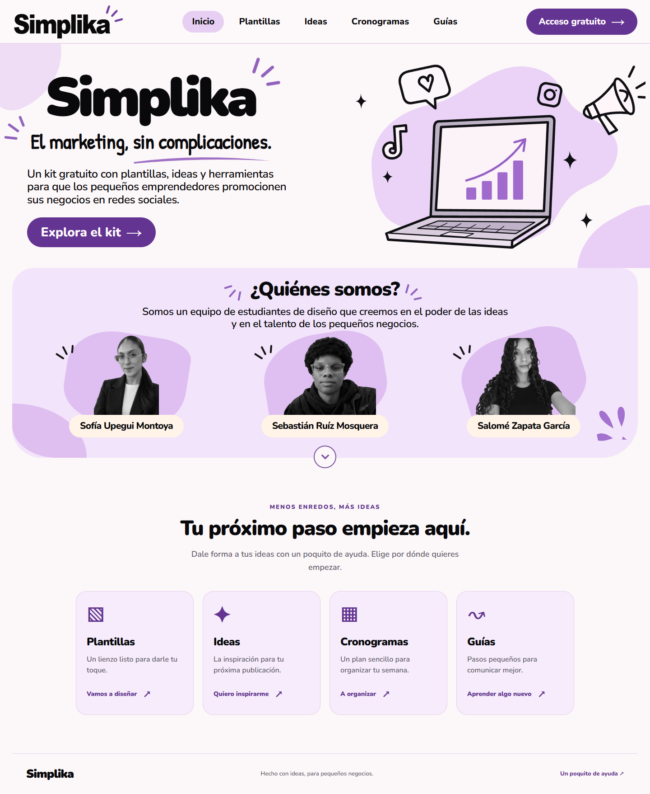

Una primera versión de nuestra idea
Simplika,
en acción.
Nuestro prototipo presenta un kit de plantillas, ideas, cronogramas y guías para apoyar a los pequeños emprendedores en sus redes sociales.

Las ideas se entienden mejor explorándolas.
Visita el prototipo y conoce la propuesta completa.